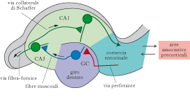
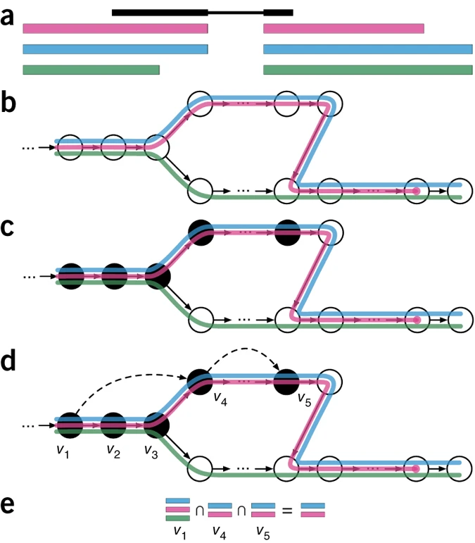

RNAseq¶
Introduzione¶
L’ identificazione dei trascritti e la quantificazione dell’ espressione genica sono due attività fondamentali della biologia molecolare sin dalla scoperta dell’RNA e della sua funzione d’ intermediario tra il custode dell’ informazione, il genoma, e l’ applicazione delle specifiche funzioni codificate all’ interno di ciascun trascritto prodotto da ciascun gene [1].
L’ avvento delle tecnologie di sequenziamento di nuova generazione ha permesso di mettere a punto delle metodiche per l’investigazione del trascrittoma.
NB: parte degli step presentati nella nostra procedura sono già stati effettuati. Inoltre, più che dell’ analisi bioinformatica ci focalizzeremo sull’ analisi differenziale statistica dei dati di trascrittomica.
L’ analisi statistica dei dati che andremo ad analizzare sarà effettuata utilizzando R, un ambiente sviluppato appositamente per lo sviluppo e l’ applicazione di pacchetti statistici. Per semplicità utilizzeremo la versione di R già installata sulle macchine virtuali.
Caso Studio¶
Analizzeremo una parte dei dati discussi nel paper Annese et al. 2018, Scientific Reports.
Lo studio ha riguardato l’ applicazione di metodologie NGS sia per l’ analisi del trascrittoma che del mirnoma.
Come potrete leggere il lavoro è molto complesso ed ha interessato diversi approcci sperimentali e bioinformatici. Noi ci focalizzeremo sull’analisi di una parte dei dati di trascrittomica.
In generale, lo scopo del lavoro è stato quello di caratterizzare il profilo trascrittomico di tessuto celebrale di soggetti affetti da Late Onset Alzheimer Disease (LOAD).
L’ AD è la maggiore forma di demenza senile progressiva cronica nel mondo. La neuropatologia della malattia è caratterizzata da perdita di neuroni associata a un diffuso stato infiammatorio e stress ossidativo.
I marcatori per eccellenza sono gli aggregati intra-neuronali (NFT intraneural fibrillary tangles) della proteina associata ai microtubili Tau, che risulta essere iperfosforilata, e la deposizione di placche di
B-Amiloide extracellulari, dovute al taglio proteolitico della proteina transmembrana Amyloid Precursor Protein, APP.
Nel lavoro è stato analizzato il profilo trascrittomico di 6 pazienti affetti da LOAD e 6 soggetti sani di sesso maschile e di comparabile età di morte. Inoltre, sono stati inclusi anche 6 campioni di soggetti affetti da Parkinson Disease (PD),
come una sorta di controllo di patologia neurodegenerativa e per capire quali sono le modificazioni specifiche dell’ AD. I campioni utilizzati, ottenuti da una biobanca, riguardano la regione dell’Ippocampo CA1.

Noi ci soffermeremo sulla comparazione dei dati di RNA-seq tra soggetti sani e affetti da Alzheimer.
Analizzeremo 12 campioni:
Sample |
Condition |
|---|---|
SRR-10H_HD |
HC |
SRR-11H_HD |
HC |
SRR-6H_HD |
HC |
SRR-7H_HD |
HC |
SRR-8H_HD |
HC |
SRR-9H_HD |
HC |
SRR-1H_AD |
AD |
SRR-2H_AD |
AD |
SRR-32H_AD |
AD |
SRR-3H_AD |
AD |
SRR-4H_AD |
AD |
SRR-5H_AD |
AD |
La procedura di preparazione delle librerie di sequenziamento ha previsto l’ utilizzo del kit TruSeq Stranded Total RNA dell’Illumina ed il sucessivo sequenziamento con piattaforma NextSeq 500 con layout 2x100.
Valutazione della qualità delle sequenze prodotte¶
Prima di procedere con l’ analisi del trascrittoma dobbiamo valutare la qualità delle sequenze ed eventualmente optare per una procedura di trimming.
Considerato che abbiamo sequenziato 12 campioni e che quindi abbiamo un totale di 24 file fastq da valutare, utilizzeremo, oltre al FastQC, un tool chiamato MultiQC.
cd
mkdir RNAseq && cd RNAseq
source /opt/miniconda3/bin/activate kallisto
Per questioni di spazio e tempo vedremo direttamente come generare il report prodotto da MultiQC.
:bangbang: Quello che è riportato nel BOX 1 non va eseguito!!! :bangbang:
:heavy_minus_sign: :heavy_minus_sign: :heavy_minus_sign: :heavy_minus_sign: :heavy_minus_sign: :heavy_minus_sign: :heavy_minus_sign: :heavy_minus_sign: :heavy_minus_sign: :heavy_minus_sign: :heavy_minus_sign: :heavy_minus_sign: :heavy_minus_sign: :heavy_minus_sign: :heavy_minus_sign: :heavy_minus_sign: :heavy_minus_sign: :heavy_minus_sign: :heavy_minus_sign: :heavy_minus_sign: :heavy_minus_sign: :heavy_minus_sign: :heavy_minus_sign: :heavy_minus_sign: :heavy_minus_sign: :heavy_minus_sign:
BOX 1
Esecuzione del FastQC:
mkdir fastqc_outputfastqc input/*fastq.gz --noextract -o fastqc_output
:heavy_minus_sign: :heavy_minus_sign: :heavy_minus_sign: :heavy_minus_sign: :heavy_minus_sign: :heavy_minus_sign: :heavy_minus_sign: :heavy_minus_sign: :heavy_minus_sign: :heavy_minus_sign: :heavy_minus_sign: :heavy_minus_sign: :heavy_minus_sign: :heavy_minus_sign: :heavy_minus_sign: :heavy_minus_sign: :heavy_minus_sign: :heavy_minus_sign: :heavy_minus_sign: :heavy_minus_sign: :heavy_minus_sign: :heavy_minus_sign: :heavy_minus_sign: :heavy_minus_sign: :heavy_minus_sign: :heavy_minus_sign:
Adesso possiamo procedere all’ esecuzione di MultiQC:
multiqc /home/share/RNAseq/fastqc_output/
Nonostante siamo ampiamente soddisfatti della qualità dei dati effettuiamo comunque il trimming.
:bangbang: Quello che è riportato nel BOX 2 non va eseguito!!! :bangbang:
:heavy_minus_sign: :heavy_minus_sign: :heavy_minus_sign: :heavy_minus_sign: :heavy_minus_sign: :heavy_minus_sign: :heavy_minus_sign: :heavy_minus_sign: :heavy_minus_sign: :heavy_minus_sign: :heavy_minus_sign: :heavy_minus_sign: :heavy_minus_sign: :heavy_minus_sign: :heavy_minus_sign: :heavy_minus_sign: :heavy_minus_sign: :heavy_minus_sign: :heavy_minus_sign: :heavy_minus_sign: :heavy_minus_sign: :heavy_minus_sign: :heavy_minus_sign: :heavy_minus_sign: :heavy_minus_sign: :heavy_minus_sign:
BOX 2
Effettuiamo il trimming:
cd input_data
mkdir ../trimmed
for sample in $(cat ../sample_list)
do
echo $sample
shopt -s nullglob
array=($sample*)
shopt -u nullglob
echo "${array[@]}"
sickle pe -f ${array[0]} -r ${array[1]} -o ../trimmed/${sample}_R1_trimmed.fastq.gz -p ../trimmed/${sample}_R2_trimmed.fastq.gz -s ../trimmed/${sample}_unpaired.fastq.gz -q 30 -l 50 -t sanger -g
unset array
done
cd ..
:heavy_minus_sign: :heavy_minus_sign: :heavy_minus_sign: :heavy_minus_sign: :heavy_minus_sign: :heavy_minus_sign: :heavy_minus_sign: :heavy_minus_sign: :heavy_minus_sign: :heavy_minus_sign: :heavy_minus_sign: :heavy_minus_sign: :heavy_minus_sign:
Caratterizzazione dei trascritti espressi¶
Nel lavoro da cui abbiamo preso i dati che stiamo analizzando è stato utilizzato un approccio bassato sull’ allineamento delle reads sul genoma di riferimento.
Successivamente è stato dedotto il livello di espressione a livello di trascritti e geni.
Per questa esercitazione utilizzeremo un approccio basato sugli pseudo-allineamenti, con un tool chiamato Kallisto.
Kallisto utilizza un approccio simile a quello visto per l’assemblaggio dei genomi, basato sui k-mer ed i grafici di de Bruijn,
che in questo caso chiamiamo transcriptome de Bruijn Graph (T-DBG).
Alla fine dell’analisi quello che otteniamo è una tabella dove per ogni trascritto è riportato il livello di espressione in TPM.

:bangbang: Quello che è riportato nel BOX 3 non va eseguito!!! :bangbang:
:heavy_minus_sign: :heavy_minus_sign: :heavy_minus_sign: :heavy_minus_sign: :heavy_minus_sign: :heavy_minus_sign: :heavy_minus_sign: :heavy_minus_sign: :heavy_minus_sign: :heavy_minus_sign: :heavy_minus_sign: :heavy_minus_sign: :heavy_minus_sign:
BOX 3
Effettuiamo il trimming:
cd ../trimmed
for sample in $(cat ../sample_list)
do
echo $sample
kallisto quant -i /home/share/Kallisto_index/GRCh38_p13/Homo_sapiens_GRCh38_cdna_all_ncrna -o ../kallisto_quant/${sample} -b 100 --rf-stranded -t 20 ${sample}_R1_trimmed.fastq ${sample}_R2_trimmed.fastq
done
cd ..
:heavy_minus_sign: :heavy_minus_sign: :heavy_minus_sign: :heavy_minus_sign: :heavy_minus_sign: :heavy_minus_sign: :heavy_minus_sign: :heavy_minus_sign: :heavy_minus_sign: :heavy_minus_sign: :heavy_minus_sign: :heavy_minus_sign: :heavy_minus_sign:
Analisi statistica¶
Per l’ analisi statistica utilizzeremo un tool chiamato sleuth.
Sleuth è disegnato per importare i dati prodotti da Kallisto e procedere all’ analisi differenziale tra le condizioni in analisi,
nel nostro caso HC e AD.
:bangbang: Quello che è riportato nel BOX 4 non va eseguito!!! text :bangbang:
:heavy_minus_sign: :heavy_minus_sign: :heavy_minus_sign: :heavy_minus_sign: :heavy_minus_sign: :heavy_minus_sign: :heavy_minus_sign: :heavy_minus_sign: :heavy_minus_sign: :heavy_minus_sign: :heavy_minus_sign: :heavy_minus_sign: :heavy_minus_sign:
BOX 4
Sleuth è un pachetto di R, una piattaforma che utilizziamo per l’analisi statistica:
importazione della libreria di Sleuth:
library("sleuth")
Definiamo l’elenco dei campioni in analisi e associamo i file con le quantificazioni effettuate da kallisto:
sample_id <- dir(file.path(".", "kallisto_quant"))
sample_id
kal_dirs <- file.path("kallisto_quant", sample_id)
Importiamo il file con i metadata ed associamo a ciascun campione le conte generate da kallisto:
s2c <- read.table("metadata.csv", header = TRUE, stringsAsFactors=FALSE)
s2c <- dplyr::mutate(s2c, path = kal_dirs)
Costriuamo il modello statistico sui cui si basa Sleuth:
matrice = model.matrix(~condition,s2c)
so <- sleuth_prep(s2c, extra_bootstrap_summary = TRUE,full_model = matrice, filter_fun=function(x){basic_filter(x, 5, 0.25)})
so <- sleuth_fit(so, ~condition, 'full')
so <- sleuth_fit(so, ~1, 'reduced')
so <- sleuth_lrt(so, 'reduced', 'full')
Raccogliamo i risultati a livello di Trascritti:
sleuth_table <- sleuth_results(so, 'reduced:full', 'lrt', show_all = FALSE)
sleuth_significant <- dplyr::filter(sleuth_table, qval <= 0.05)
head(sleuth_significant, 20)
Associamo ai trascritti i nomi dei geni ed aggiorniamo il modello:
mart <- biomaRt::useMart(biomart = "ENSEMBL_MART_ENSEMBL",
dataset = "hsapiens_gene_ensembl",
host = 'ensembl.org')
t2g <- biomaRt::getBM(attributes = c("ensembl_transcript_id", "ensembl_gene_id",
"external_gene_name"), mart = mart)
t2g <- dplyr::rename(t2g, target_id = ensembl_transcript_id,
ens_gene = ensembl_gene_id, ext_gene = external_gene_name)
so <- sleuth_prep(s2c, target_mapping = t2g, aggregation_column = 'ens_gene')
so <- sleuth_fit(so, ~condition, 'full')
so <- sleuth_fit(so, ~1, 'reduced')
so <- sleuth_lrt(so, 'reduced', 'full')
sleuth_table_gene <- sleuth_results(so, 'reduced:full', 'lrt', show_all = FALSE)
sleuth_significant_gene <- dplyr::filter(sleuth_table_gene, qval <= 0.05)
head(sleuth_significant_gene, 20)
:heavy_minus_sign: :heavy_minus_sign: :heavy_minus_sign: :heavy_minus_sign: :heavy_minus_sign: :heavy_minus_sign: :heavy_minus_sign: :heavy_minus_sign: :heavy_minus_sign: :heavy_minus_sign: :heavy_minus_sign: :heavy_minus_sign: :heavy_minus_sign: :heavy_minus_sign: :heavy_minus_sign: :heavy_minus_sign: :heavy_minus_sign: :heavy_minus_sign: :heavy_minus_sign: :heavy_minus_sign: :heavy_minus_sign: :heavy_minus_sign: :heavy_minus_sign: :heavy_minus_sign: :heavy_minus_sign: :heavy_minus_sign:
Adesso possiamo procedere a estrarre i dati ottenuti dall’ analisi statistica e fare un po’ di valutazioni:
Avviamo R:
R
Importiamo la libreria di Sleuth:
library("sleuth")
Carichiamo i dati pre-analizzati:
load("/home/share/RNAseq/HD_AD_sleuth_full.RData")
Salviamo i dati con le annotazioni relative ai geni e scarichiamoli sul nostro computer:
write.csv(sleuth_significant_gene, file="diff_trascript_genes.csv")
Gene Ontology Enrichment analysis¶
Utilizziamo Panther per utilizzare la Gene Ontology e vedere a quali classi appartengono i geni che abbiamo estratto dall’ analisi differenziale.
Collegatevi a Panther;
Incollata la lista con li accession number ENSEMBL. Selezionate Statistical Overrepresentation set e GO cellular component;
In “Default whole-genome lists:” selezionate Homo sapiens gene;
Cliccate su Launch Analysis.